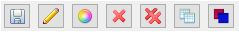

Chartreuse Sandbox View
Introduction
Historically, Chartreuse has required the user to provide some upfront configuration before they can turn a data output file into a visualized plot. However, there’s often a need to quickly visualize the data using the most reasonable default options.
To that end, the Chartreuse Sandbox View can be thought of a “staging area” where the user can send data, look at that data, and overlay it with other datasets for comparison purposes. With the Sandbox, there’s no need to worry about things like configuring how the data will be extracted, how the canvases will be laid out, etc.
By default, the Chartreuse Sandbox View is hidden. It can be activated in one of two ways:
Trigger the Sandbox View to appear by sending data to it.
Open the “Show View” dialog by selecting Window > Show View > Other…, then selecting Chartreuse > Sandbox.
Supported Data Sources
The Chartreuse Sandbox View can receive data from the following sources of plot data:
CSV files
Dakota input files (i.e. the PDF curve of a given uncertainty variable)
Dakota tabular data files
Dakota-based HDF5 files (generic HDF5 files are not supported)
Sending Data to the Sandbox
There are two primary methods to send data to the Sandbox. Both methods will be illustrated using a single example.
Options
(or How to Play in the Sandbox)
Once you have some data in the Sandbox view, you have some options for how to manipulate it.
Save Save the plot to a file. You can choose .plot (native Chartreuse format), .png (still screenshot), or .html (for web-based viewing of the plot).
Edit Change the label of any given canvas in the Sandbox. Note that this will impact data grouping if you later try to automatically combine plots with matching data labels.
Edit Color Change the color of a given trace.
Delete Delete a canvas (and all its traces) from the Sandbox.
Delete All Delete all data in the Sandbox. This button will not prompt you to be sure about deleting your data.
Layout Strategy Tell the Sandbox what to do with matching data labels:
Replace Matching Labels If a dataset is added to the Sandbox and it matches the label of an existing canvas, the existing canvas will be removed in favor of the dataset being added.
Overlay Matching Labels (this is the default option) If a dataset is added to the Sandbox and it matches the label of an existing canvas, the two datasets will be combined onto the same canvas.
Group Matching Labels If a dataset is added to the Sandbox and it matches the label of an existing canvas, the added dataset will be placed on a new canvas located to the right of the existing canvas.
Manually Overlay Force two plot traces to be combined onto the same canvas, even if they are unrelated datasets.
Recommended Reading
For more traditional Chartreuse plotting options, see the main Chartreuse documentation page.
For visualizing PDF curves of Dakota’s uncertain variable types using Next-Gen Workflow, see the page on Chartreuse/Next-Gen Workflow integration.